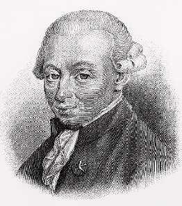

Борис Акунин
Мой календарь
22 апреля 1724 года родился Иммануил Кант, бог философии. Большинство помнят из Канта только одно: цитату про звездное небо и нравственный закон. Критику обоих разумов, чистого и практического, не говоря уже о «Критике способности рассуждения» освоили лишь выпускники философских факультетов. Я учился на историко-филологическом, поэтому принадлежу к невежественному большинству.
Но Кант научил меня одной очень важной истине. Эта концепция изложена не в философском трактате, а в личной переписке. (Я люблю изучать эпистолярное наследие умных людей, оттуда иногда узнаешь больше, чем из сочинений, предназначенных для публики).
Иммануил всю жизнь был хилым и болезненным. В письмах он постоянно жалуется друзьям на состояние здоровья - то одно не так, то другое. А в 1778 году вдруг делится открытием: поскольку он чувствует себя хреново постоянно, это по-видимому и следует считать нормой, то есть здоровьем.
После этого философ больше не болеет, вплоть до восьмидесяти лет. В биографии так и написано: «8 октября 1803 года Кант первый раз в своей жизни заболел. На протяжении четырех месяцев ему становилось всё хуже и хуже, пока он не скончался 12 февраля 1804 года».
Старая графиня из сериала «Аббатство Даунтон» ту же самую идею формулирует так: “I’ll be fine. Till I am not”. «У меня всё будет хорошо. Пока не станет плохо».
Чем старше я становлюсь, тем больше убеждаюсь в правоте Канта. С такой философией и жить веселей, и стариться приятней.